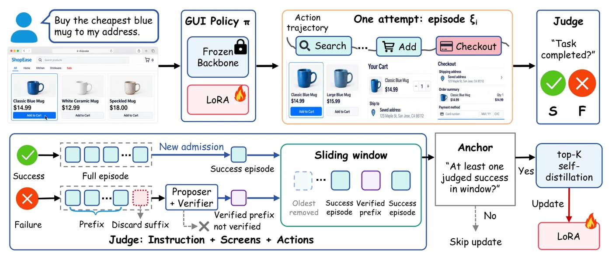

arXiv 2026
One Rollout Is All You Get
Fully test-time adaptation for GUI agents
A deployed agent gets one attempt per task, with no retries or ground-truth labels. SOLO learns from its own judged episodes through a small LoRA adapter, improving success by 3–6 points over the frozen agent.